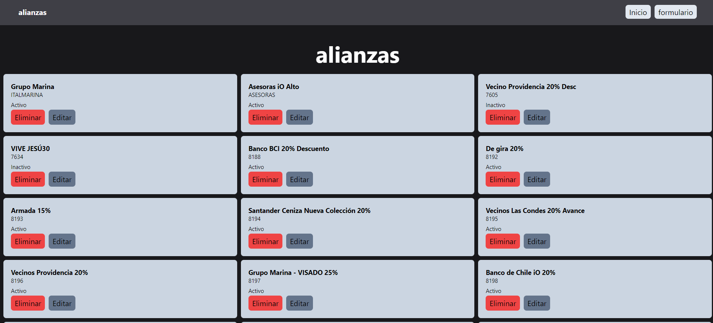

¡Hola a todos!
Mi nombre es Luis Pérez y soy un apasionado Administrador de Redes Computacionales y Desarrollador Full Stack. Actualmente, estoy cursando mi carrera de Ingeniería Civil en Informática, donde he adquirido una sólida base de conocimientos en tecnologías de la información y la comunicación. Con más de 6 años de experiencia en el rubro, he tenido la oportunidad de trabajar en diversos proyectos, desde la implementación y administración de redes hasta el desarrollo de aplicaciones web y móviles. Mi experiencia en el desarrollo full stack me ha permitido trabajar con una amplia gama de tecnologías, incluyendo PHP, JavaScript, HTML, CSS y bases de datos relacionales y no relacionales. Mi pasión por la tecnología y el aprendizaje continuo me ha llevado a explorar nuevas tecnologías y metodologías de desarrollo, siempre buscando mejorar mis habilidades y ofrecer soluciones innovadoras a los desafíos que se presentan. Estoy emocionado de formar parte de esta comunidad y compartir mis conocimientos y experiencias con ustedes. ¡Espero poder colaborar y aprender de todos ustedes! ¡Gracias por su atención!Proyecto MERN
El proyecto MERN de sistema de gestión de Alianzas empresariales, es una solución versátil y escalable que puede ser utilizada por individuos y equipos para mejorar la productividad y la organización en sus actividades diarias. Con su arquitectura de API RESTful y su capacidad de realizar operaciones CRUD, este sistema proporciona una experiencia de usuario intuitiva y eficiente.
Proyecto Inventario
El proyecto de inventario con PHP es una solución versátil y escalable que puede ser utilizada por empresas de diferentes tamaños y sectores. Con su capacidad para gestionar de manera eficiente y detallada el inventario, este sistema proporciona a las empresas una herramienta valiosa para optimizar sus operaciones y mejorar su rentabilidad.

Creacion de API con Express
El proyecto de creación de API con Node.js (Express) es una solución versátil y escalable que puede ser utilizada por aplicaciones de diferentes tamaños y sectores. Con su capacidad para manejar de manera segura y eficiente los datos de usuarios, esta API proporciona a las aplicaciones una herramienta valiosa para mejorar la experiencia del usuario y optimizar sus operaciones.